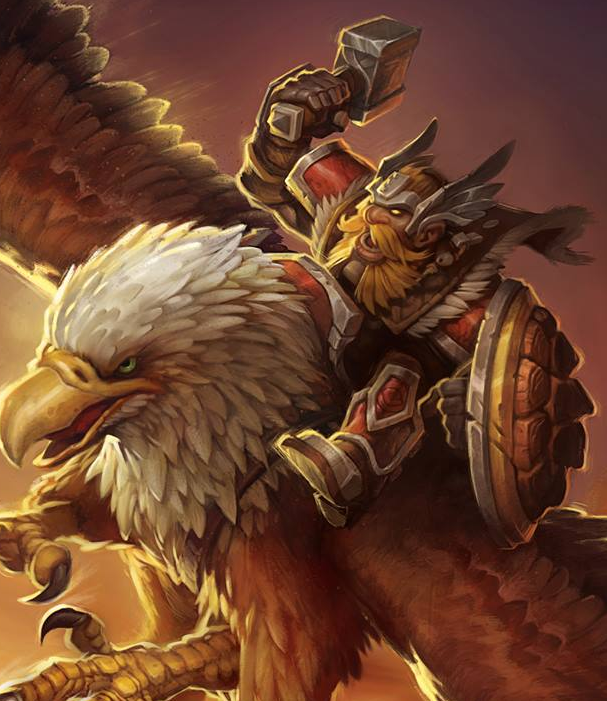

Classes > Knights > Stormlord
Lawful, non-Evil only. Also known as Mountain Knight, Eagle Paladin or Thane, or Valkyrie if female. A servant of the Plane of Justice who invokes frightening tempest magic in their quest to maintain the lawful balance of the world. Dragonkin, Lunarians and Trolls cannot be Stormlords. +4 Judge.
After the Dwarves of Iklistzefon were saved from near extinction by the Avar race, they struck a lasting alliance that would see the latter emulate the ways of the servants of High Justice Thoraad out of appreciation. Soon, an order of justiciars dedicated to maintaining lawful karmic order was formed and spread across the nations, and many noble fighters found purpose rallying under the cause of the Stormlords. Their training includes practicing the ways of geomancy and elemental sorcery, making them powerful allies and fearsome foes. They are sworn to protect all natural life, and cannot spoil a natural place or attack any animal except in self-defense. Stormlords are proficient with hammers and axes.
Level 2: Stormlords may cast Nature/Air and Nature/Earth spells using mana as if they were a Sorcerer half their level.
Level 5: Stormlords always succeed in judging the intent of any creature they speak to, immediately sensing whether their intentions are different from what they verbally claim. They can also innately protect from chaos or evil once per five levels per day.
Level 10: Stormlords are promoted to the rank of Einheri, gaining a warhorn that can grant all allies within earshot +4 STR and +4 AGI once per day.
Level 15: Gryphons begin to answer to the will of the Stormlord. They can communicate telepathically with birds as if using the commune with animals spell innately. They are inclined to serve and aid Stormlords within reason, and Gryphons will allow Stormlords to ride them into battle as unflinching flying mounts.
|
Level |
Mana |
Bonuses |
Level |
Mana |
Bonuses |
|
1 |
- |
Taunt, Dwarven Weaponry |
11 |
6+(WIS/4) |
Barony, Doublestrike |
|
2 |
1+(WIS/4) |
Air/Earth Sorcery, Mana |
12 |
6+(WIS/4) |
Feat |
|
3 |
2+(WIS/4) |
- |
13 |
7+(WIS/4) |
- |
|
4 |
2+(WIS/4) |
Feat |
14 |
7+(WIS/4) |
- |
|
5 |
3+(WIS/4) |
Bash, Judge Intent |
15 |
8+(WIS/4) |
Crit at 18, Gryphon Communion |
|
6 |
3+(WIS/4) |
- |
16 |
8+(WIS/4) |
Feat |
|
7 |
4+(WIS/4) |
- |
17 |
9+(WIS/4) |
Disarm |
|
8 |
4+(WIS/4) |
Feat |
18 |
9+(WIS/4) |
- |
|
9 |
5+(WIS/4) |
- |
19 |
10+(WIS/4) |
Riposte, Feat |
|
10 |
5+(WIS/4) |
Einherjar |
20 |
10+(WIS/4) |
- |